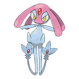
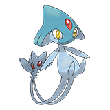
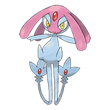
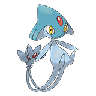
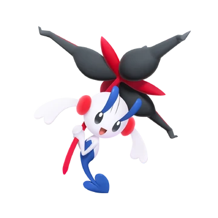
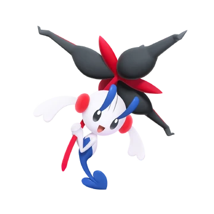

 



The Pokemon Timeline starts when Arceus hatched from an egg and used his power to create all matter and form the universe.
Genesis
Arceus also made the creation trio which was each meant to control a certaina spect of the universe. Dialga(left) controlled time, Palkia(right) controlled space, and Giratina controlled antimatter.
However, Arceus deemed that Giratina was too violent and banished him to a seperate world called the distortian realm.
Next, Arceus created the Pokemon Mew, to inhabit the world. All of the Pokemon not created directly by Arceus that are on Earth are descendents of Mew.
Seeing the abundance of life on Earth, Arceus created the Lake Gaurdians to grant 3 essential traits to all living things. Uxie(left) gave knowledge, Azelf(middle) gave willpower, and Mespirit(right) gave emotion.
Ancient History
Groudon(left) was created in magma and has control over the ground and volcanoes. Kyogre(right) was created deep in the ocean and has control over the seas. The two Pokemon has been in a nonstop rivalry for their entire existence.
The only thing that eventually stopped their fighting was Rayquaza, who lives in the skys, coming down to intervene.
A meterorite fell to Earth and contained a Pokemon called Eternatus which is currently laying dormant. The energy leaking from its core is also the reason for dynamaxing.
There's no true explanation for humans in Pokemon. They could be descendents of Pokemon or could be created by Arceus directly but they probably started to show up sometime around here.
Another meteorite lands on Earth this time containing the core of Deoxys, a space virus, which is transformed by the Earth's atmosphere and takes on a multiple humanoid forms. He also starts a rivalry with Rayquaza who is trying to protect the world from Deoxys.
Eternatus awakens and brings about the Darkest Day in the ancient Galar region. The two princes of the region use Zacian(left) and Zamazenta(right) to defeat Eternatus. Afterwards the legendary Pokemon dissapeared.
In an old kingdom there were two brothers who each shared a pokemon called the Original Dragon, which created the Unova region. These brothers shared different values so the dragon split to serve each one. Reshiram(left) was truth and Zekrom(right) was ideals.
Many Pokemon around this time have been turned into fossils or are ancestors of modern Pokemon.
A legendary Pokemon named Ho-Oh revived three Pokemon that died in a fire which turned them into the legendary beasts. However, these Pokemon were seen as unatural and hated by humans which caused Ho-oh to dissapear after seeing how creul the people were.
There was a large war which killed a king's favorite Pokemon. The king created the Ultimate Weapon to bring the Pokemon back and make them both immortal. Then he used it to end the war. However, the Pokemon was so disgusted by the king's actions that it left him. The excess energy from this weapon also created mega stones.
Modern
Human have started to create artificial Pokemon. One of them being a very powerful clone of mew called Mewtwo which escaped and now has a disdain for humans after they kept experimenting on it.
Kyogre and Groudon got woken up by two groups using the red and blue orb to try and give the world more land/ocean and they immediately started fighting again in stronger forms.
To stop the fighting Rayquaza used his mikado organ which lets him digest meteroties in the atmosphere and convert them into energy which causes him to mega evolve.
A trainer attempted to summon Palkia and Dialga so he could create a new universe in his image. He accidentally summoned Giratina though and Giratina had to be defeated so he wouldn't wreck havoc and then the trainer was lost in the distortion world with Giratina(altered form above).
A scientist found a way to create wormholes to other dimensions which leads to Pokemon named "Ultra Beasts" to appear in our world. They also created another artificial Pokemon named Type: Null.
The chairman of a company in the Galar region resummoned Eternatus in order to try and use its energy to support Galar. However, it couldn't be controlled and had to be redefeated by Zacian and Zamazenta.
Two professors created time machine that brought strong Pokemon from the past and future to the present day called paradox Pokemon.